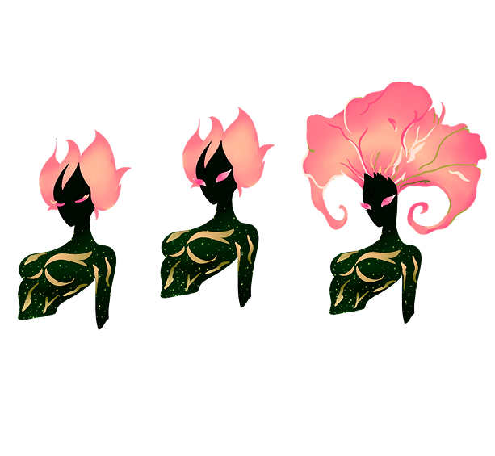
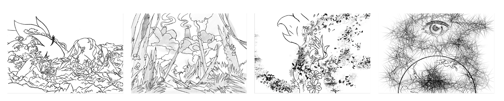
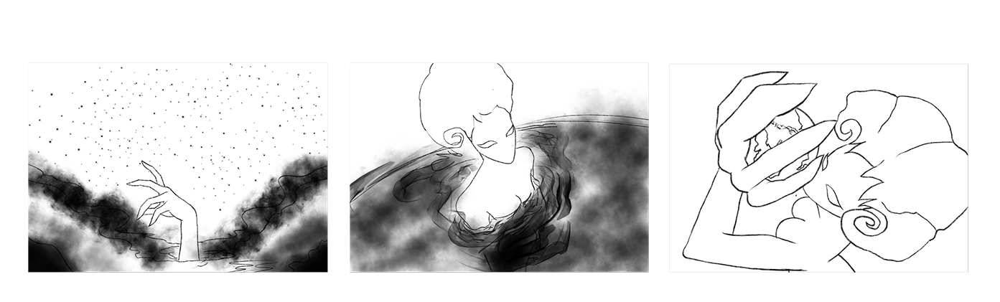
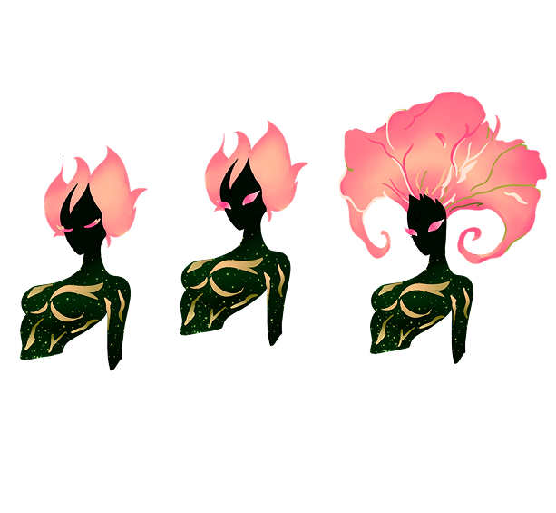
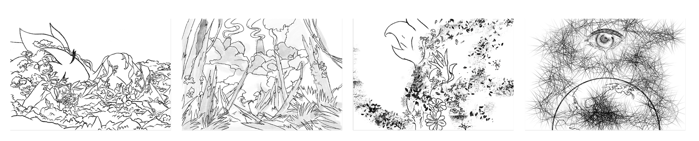
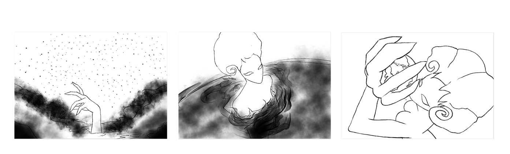

About
About
C
O
O
K GALLERRY
ZAONIE (Character Design)
CHARACTER INTRODUCTION
ROTATION SHEET
STORY BOARD
Front
Side
Back
3/4
EMOTIONS


#CharacterDesign
#Procreate
#2Ddesign

2
2.

Name: Zaonie (The Nature Absolute Being)
Characteristic: Bold, Calm
BackStory: Once the spirit of the Earth, Zaonie nurtured all life with love and care. But over time, humans grew greedy, destroying forests, depleting resources, and polluting skies and seas. Zaonie's body cracked, and her heart turned to stone.
Characteristic: Bold, Calm
BackStory: Once the spirit of the Earth, Zaonie nurtured all life with love and care. But over time, humans grew greedy, destroying forests, depleting resources, and polluting skies and seas. Zaonie's body cracked, and her heart turned to stone.
 1.png) 




